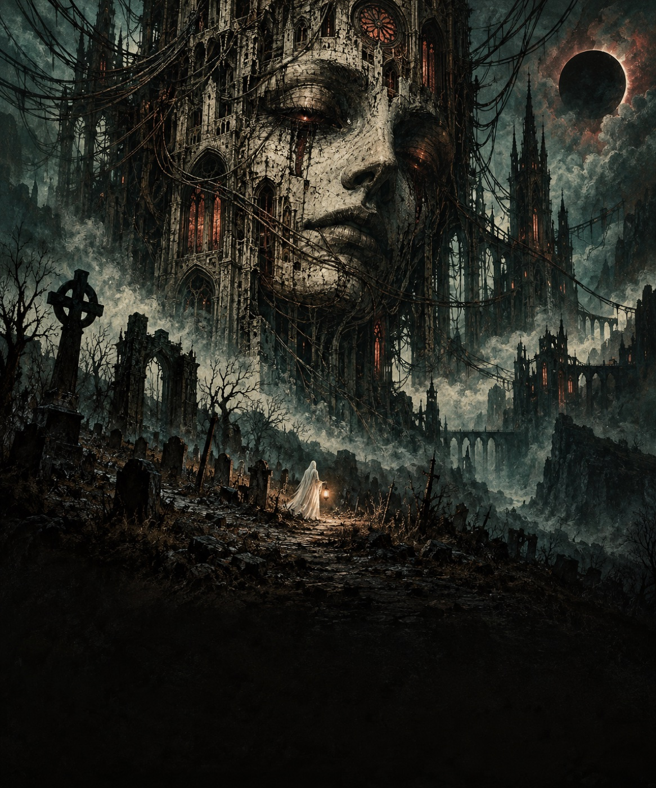

DEAD CHANNEL
ALL HALLOWS’ EXCHANGE
SEARCHING FOR CONTROLLER
Enable sound
VOL
31 OCTOBER, 1906
ALL HALLOWS’ EVE · NIGHT SERVICE
THE DEAD HAVE YOUR NUMBER.
LIVE FEED
CH. 01
AWAITING INPUT

CARTRIDGE 01
Ⅰ
Ghost Flight
The windows are watching. Keep moving.
Enter the channel
↗
PRESS THE BREADBOARD BUTTON
SEAL RECOVERED
TUNE → DIAL → ROUTE → CONNECT
REHEARSAL TUNING
HOLD TO CONNECT
1
2
3
4
5
6
7
8
9
*
0
#
HANG UP
MOVE
← ↑ ↓ →
ACTION
SPACE
PAUSE
P
01 / GHOST FLIGHT
Pause
Choose game
Expand
←
↑
↓
→
ACT